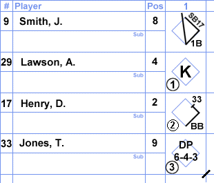

Advanced Scorekeeping

Marking Outs in an Inning
As you're going through an inning, obviously some of the runners/batters are going to get out. To accurately portray this in your scorebook, you put which out they made in a circle in the bottom left of the box. So if a batter strikes out swinging and makes the first out of the inning, the batter's box in the book would look like this:
Now if a player gets out while running the bases, you draw a half line on the basepath that he was running when he got out. You then put the number of the player that hit the ball on that play right next to the half line. You do this so when you're going back through the book you can look at each player and figure out what order the events happened in. And of course, you add the number out that runner was in a circle in the bottom left, just like before. The example of this is here:
Marking the Location of a Hit
Sometimes, scorers like to mark the path the baseball traveled after it was hit by the batter. They do not draw a line for every throw the fielders make, but just a line for the initial path of the ball right off the bat. An example of marking the location might be similar to this:
Marking Advancements
Continuing on with the same player, lets say he successfully stole second base while another player was batting. This would look like the following:
So, we mark the line indicating he went from first to second base, but we also add 'SB', telling us it was a stolen base, and the number '17' connected to it. Now without knowing the other players on the team, the 17 can be very tricky to look at. The 17 is actually the number of the player who was batting when Smith stole second base. Adding this lets us see where chronologically Smith stole the base.
Marking a Fielding Play
So far, all the batters in our examples have reached base or struck out. What happens if the batter grounds out? Well, this is where the position numbers come in. A double play that goes to the Shortstop, then to the Second Baseman (completing the first out), and finally to the First Baseman (completing the second out), would look like this:
You mark the third out on this batter because he was the last out, which was made at first base. The runner that was out at second base would have the second out marked in his line.
Full Inning Example
The following is an example of a complete inning of baseball using the examples from above. See if you can follow along.
If you were able to follow the events of this example inning, then I would say you are ready to try out your new scorekeeping abilities at the very next baseball game you attend! There are many other different scoring techniques, way to many to ever cover them all, but these are the most universally understood notations. After some experience, most scorers will start to develop their own little system and use different abbreviations for scoring games.
Basically, the correct way to score a baseball game is whatever way you will understand it when you look at the book again in a couple months. So, go ahead and find your own scoring system! It makes you feel like you're a part of the game. I find it makes the games much more enjoyable.
All images on this page are from http://baseballscorecard.com/